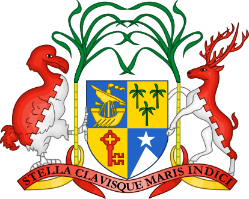
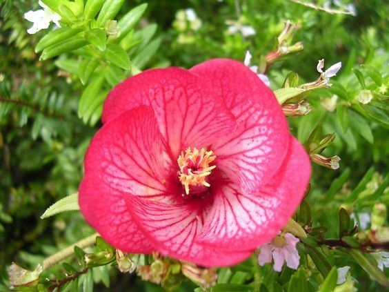

History of Mauritius
The Republic of Mauritius comprises a collection of islands in the Indian Ocean, East of the African continent and Madagascar. The main island, Mauritius, is home to the capital city, Port Louis; other islands include Rodrigues, Ageléga, and St. Brandon. In October 2024, the UK ceded sovereignty of the archipelago of Chagos to the Republic of Mauritius.
The islands are said to have been uninhabited until colonized by the Dutch in 1598, then the French in 1715, and finally the British in 1814. The colonizers enslaved African and Malagasy people, and when slavery was abolished in 1835, the British brought indentured laborers from India. Traders from China and Arab regions also influenced the culture of the islands. After gaining independence in 1968, the Republic of Mauritius was formed in 1992.

The Underwater Waterfall
This wonder of nature can be found off the SW coast of the main
island of Mauritius, near the Le Morne Peninsula. After being
formed by volcanic activity 8 million years ago, the Mascarene
Islands (including several islands of the Republic of Mauritius
and neighboring French island Reunion) sit on an ocean shelf. As
sand falls from this shelf into the depths of the ocean, it
creates a waterfall effect visible from above. There are
helicopter and seaplane tours for the best views, and it can be
partially seen after hiking to the top of Le Morne Brabant.
For a more scientific explanation of this phenomenon,
click here.
For general information,
click here.
Coat of Arms
The Mauritius Coat of Arms includes images of the dodo and the sambar deer, both native species affected by hunting and habitat destruction. The dodo was a flightless bird unique to Mauritius that went extinct in the 17th century. The sambar deer has been listed as a vulnerable species since 2008.
Image credit: This vector image includes elements that have been taken or adapted from this file
National Flower
The national flower of Mauritius is Trochetia boutoniana, known as Boucle d'Oreille in Mauritean Creole. It grows in the wild on the mountainside of Le Morne Brabant.